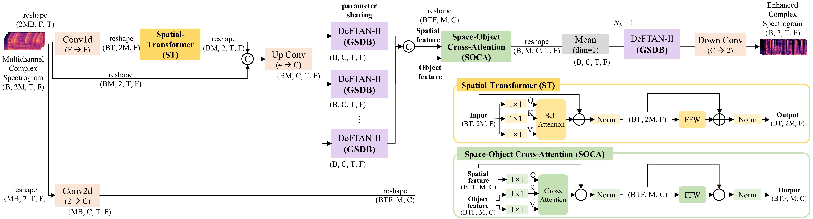
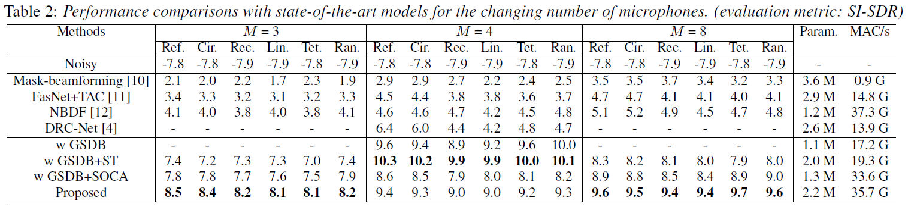
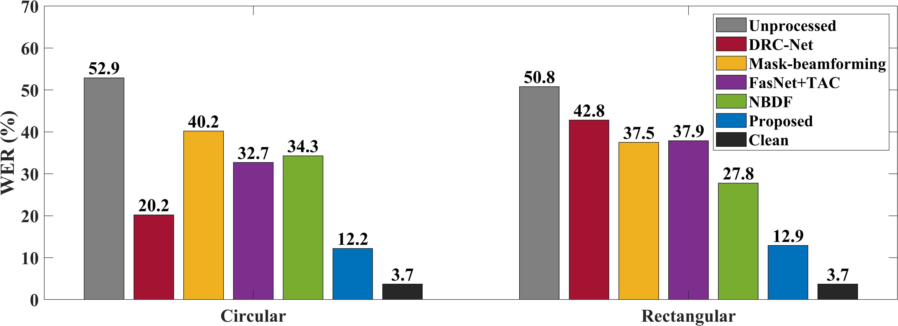

|

Abstract: We propose an array geometry agnostic multichannel speech enhancement model, which is trained on a single microphone array but can enhance speech in various arrays with different shapes and numbers of microphones. To enable array agnostic processing, the model employs a gated split dense block (GSDB) that separates foreground speech and background noise regardless of array geometry. Furthermore, to design an array-agnostic encoder compatible with different numbers of microphones, we introduce the spatial transformer (ST) that aggregates spatial information by channel-wise self-attention. The proposed space-object cross-attention (SOCA) block alleviates overfitting to a specific array configuration through cross-attention between spatial features and object features. Experimental results demonstrate the efficacy of the proposed model across various array geometries in both simulated and real-world datasets.
Experimental result of simulated dataset (click to expand)

Real-world experimental result (click to expand)

|